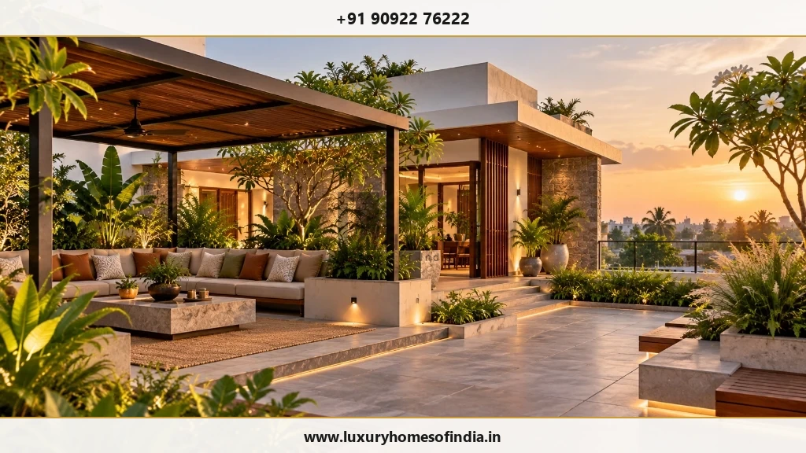
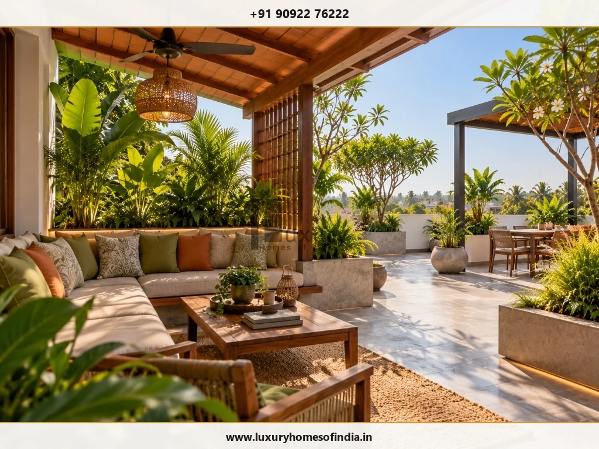
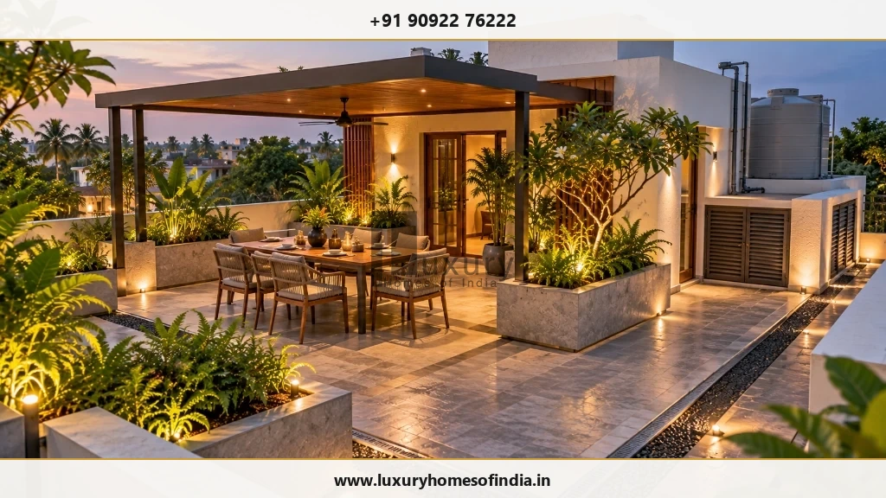

Luxury Rooftop Design in Chennai
Turn your terrace into a considered part of your home.
Key Takeaways: Rooftop Design in Chennai
- Structural Feasibility: Additional dead loads from soil planters, pergolas, and stone paving require professional structural engineering audit prior to installation.
- Waterproofing Integrity: Seamless elastomeric waterproofing membranes and proper slope drainage prevent water seepage into living spaces below.
- Climate Protection: Chennai's coastal sun and monsoon conditions require engineered wooden pergolas, louvers, and heat-reflective floor tiles.
- Service Preservation: Overhead water tanks, solar panels, and plumbing stacks must remain accessible for maintenance.
A rooftop can become a quiet place to unwind, an outdoor dining area or a setting for family gatherings. But successful rooftop design begins with more than furniture, planting and decorative finishes.
Shade, privacy, safe access, drainage, waterproofing and the building's structural capacity all influence what is appropriate.
If you are exploring luxury rooftop design in Chennai, start with how you want to use the terrace and what the property can safely accommodate.
At Luxury Homes of India, published residential capabilities include architectural design and planning, structural engineering, turnkey construction and renovation. For both new villa construction and structural renovation of existing homes, rooftop design is evaluated through an initial structural load and waterproofing audit.
Discuss Your Rooftop Design Requirements
Speak with Luxury Homes of India architectural and structural engineering team to evaluate your terrace load capacity, waterproofing, and pergola design.

Design around the way you want to use the space
A rooftop does not need to include every possible feature.
It may work best as a quiet seating area, an outdoor dining space or a simple terrace with carefully selected planting. Begin with the activities that matter most to your household.
Your brief can explore:
- Private Seating: Comfortable seating arrangements for everyday use.
- Family Gatherings: Open layout space for family gatherings and hosting.
- Outdoor Dining: Weather-protected outdoor dining zones.
- Planting Strategy: Suitable tropical planting and lightweight planter boxes.
- Solar Shading: Shaded pergolas, louvers, or retractable canopy areas.
- Evening Lighting: Warm ambient step lighting, wall sconces, and landscape spotlights.
- Maintenance Access: Unobstructed access for routine cleaning and plant care.
- Building Services: Existing building services (water tanks, solar panels) that must remain accessible.
The layout should make room for comfortable movement rather than fill every available area.
Establish feasibility before choosing finishes
For an existing terrace, one of the first questions is what the building can safely support.
Furniture, planters, shade structures and equipment can introduce additional loads. Their weight, position and method of installation should be reviewed by qualified structural professionals rather than inferred from the amount of space available.
Before developing the design, assess:
- Structural Capacity: Structural condition, slab thickness, and load capacity.
- Waterproofing System: Roof slab construction and underlying waterproofing layer.
- Drainage Flow: Existing rainwater outlets and slope angles.
- Access & Circulation: Staircase dimensions and safe terrace access.
- Edge Safety: Parapet wall height and protective railing fixings.
- Utility Provisions: Outdoor electrical points, water supply, and lighting circuits.
- Regulatory Constraints: Applicable municipal height restrictions and building permit requirements.
- Long-Term Upkeep: Long-term maintenance requirements for exposed materials.
An attractive render does not establish that a proposal is safe or buildable.
Create comfortable rooftop zones
A seating area
Plan furniture around comfortable movement, privacy and exposure. Consider where people will sit, how they reach the area and whether shade or weather protection is needed.
Outdoor dining
Review table clearances, lighting and practical access from the indoor kitchen. If an outdoor kitchen or cooking area is proposed, it requires separate consideration of utility services, ventilation, fire safety and applicable building rules.
A quiet retreat
A smaller area can suit reading, conversation or relaxation. Privacy screens, bamboo louvers, and tall tropical planting may be explored where technically suitable. Their fixings, height and wind exposure should be reviewed as part of the structural plan.
Planting
Rooftop planting needs to respond to both environmental conditions and the building structure. Planters require consideration of wet soil weight, water management, root barrier space, high wind exposure and irrigation maintenance. They should not be selected solely for appearance.

Shade and weather protection
A rooftop in Chennai needs a considered response to intense solar radiation, heavy monsoons, and coastal winds.
A wooden pergola, aluminum louvered canopy, or fabric shading element may be appropriate, but it is not simply a styling decision.
Review:
- Solar Performance: Shading effectiveness during peak sun hours.
- Structural Fixings: Anchor points, column foundations, and wind uplift resistance.
- Water Drainage: Rainwater gutter integration and slope direction.
- Material Durability: UV-resistant timber composites, powder-coated metals, and marine-grade hardware.
- Service Access: Clearance for overhead water tanks and solar maintenance.
- Permit Compliance: Height regulations under Chennai planning rules.
Any proposed structure should be assessed for the specific property rather than assumed suitable because a similar feature works elsewhere.
Waterproofing and drainage come first
A terrace's appearance should never compromise its water-management system.
Coordinate new finishes, planters and structures with the existing roof. New penetrations, mechanical fixings and changes in floor levels should be treated as technical details, not merely decorative decisions.
The design should establish:
- Drainage Slope: How water will drain cleanly to outlets without pooling.
- Waterproofing Audit: Whether existing waterproofing requires replacement or elastomeric coating.
- Interface Details: How proposed planter beds and pergola posts interface with the roof slab.
- Responsibility: Which contractor or specialist is responsible for waterproofing guarantees.
- Water Testing: Mandatory 48-hour ponding tests required before laying surface tiles.
- Maintenance Plan: How future drain clearing and membrane inspections will be carried out.
Confirm these technical responsibilities in writing before execution begins.

Materials suited to rooftop use
Outdoor finishes and furniture need to suit Chennai's humid, sun-exposed climate.
| Rooftop Element | What to Evaluate |
|---|---|
| Floor Finishes | Weight, drainage gaps, slip resistance, thermal heat reflection (anti-skid vitrified pavers, granite, or composite decking) |
| Outdoor Furniture | Structural stability against wind, weather-proof synthetic wicker, teak, or powder-coated aluminum, and quick-dry cushions |
| Planters | Lightweight GRP/FRP containers, soil-less growth media, root-barrier liners, and drip irrigation drainage |
| Privacy Screens | Wind resistance, secure structural anchor points, low-maintenance timber composites or aluminum louvers |
| Rooftop Lighting | IP65+ outdoor rating, low-voltage LED circuits, safe conduit routing, and ambient step/planter illumination |
| Shade Structures | Wind load engineering, UV stability, integrated rainwater gutters, and durable structural anchoring |
| Storage & Joinery | Weatherproof seals, ventilation to prevent mold, marine plywood or aluminum frames, and UV resistance |
A product intended for a sheltered interior should not automatically be used on an exposed rooftop.
Privacy and safety, planned together
Screening can improve privacy, but it should not interfere with safe circulation or required building functions.
Review access routes, edge parapets, changes in floor level and night lighting with qualified professionals. Keep essential access routes to solar panels, AC outdoor units, and water tanks clear.
If children, seniors, or guests will use the terrace, include safety railings and anti-slip surfaces in the design brief from the beginning. Decorative boundary walls should not be assumed to provide adequate structural protection.
Keep the rooftop useful to the building
A terrace may also contain overhead water tanks, solar water heaters, rainwater pipes, air conditioning outdoor units, or plumbing stacks.
These need continuous access for inspection, routine operation and replacement.
The leisure layout should work around essential building functions rather than conceal or obstruct them. Before relocating any equipment, establish who is responsible for assessing the proposed plumbing and structural changes.
Understand the design and execution scope
Before accepting a rooftop proposal, confirm that your project agreement covers:
- Site & Load Assessment: Structural load calculations and roof slab condition audit.
- Design Deliverables: Architectural plans, 3D visualizations, material specs, and lighting layouts.
- Waterproofing Scope: Surface preparation, elastomeric membrane application, slope corrections, and water testing.
- Finishes & Planters: Tile laying, drainage mats, planter installation, and soil media.
- Pergolas & Structures: Engineering, fabrication, anti-corrosion treatment, and mounting.
- MEP Works: Outdoor electrical wiring, IP-rated fixtures, water points, and drainage hookups.
- Quality Control: On-site execution supervision managed by a dedicated residential project manager.
Design, specialist engineering and execution should be clearly defined in your scope rather than left to assumption.
Frequently asked questions
Let's plan a rooftop that works with your home
Bring your ideas together with the practical requirements behind them.
Speak with Luxury Homes of India about a rooftop concept that connects personal use, considered design and appropriate technical assessment.
Start Your Rooftop Design Discussion
Consult with Luxury Homes of India technical team to discuss structural feasibility, pergola concepts, terrace gardens, and turnkey execution.